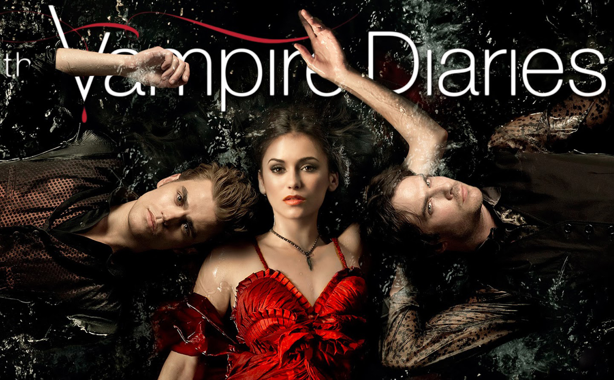

The Vampire Diaries
Watch Thursdays at 8/7c on The CW
Based on the best-selling book series, The Vampire Diaries continues for another season of epic romance, suspense and a bloody good thrill ride that follows the story of two vampire brothers, obsessed with the same gorgeous girl, who are battling to control the fate of an entire town.
The fifth season of The Vampire Diaries began with a sense of hope for Elena (Nina Dobrev). After a passionate summer with Damon (Ian Somerhalder), Elena headed to Whitmore College with Caroline (Candice Accola), not knowing that Bonnie (Kat Graham) sacrificed her life to save Jeremy (Steven R. McQueen). As Bonnie’s friends fought to bring her back to life as the Anchor to the Other Side, Stefan (Paul Wesley) had to face-off with his doppelganger Silas, and a newly human Katherine (Nina Dobrev) struggled with mortality and motherhood. Damon’s relationship with Elena was put to the test when Enzo (guest star Michael Malarkey), an old vampire friend from Damon’s past, revealed he was still alive and looking for revenge. Stefan and Caroline’s friendship deepened as they stood up to the Travelers, a nomadic witch tribe driven to strip Mystic Falls of magic and cast out its supernatural residents. Finally, with time running low until the inevitable collapse of The Other Side, Damon and Bonnie made the ultimate sacrifice in order to bring back their friends.
Now, months after this devastating tragedy, everyone is dealing with the loss of their loved ones in different ways, some more destructively than others. What happened to Bonnie and Damon, and if they can even be saved, remains a mystery. Meanwhile, their beloved hometown of Mystic Falls continues to be a magic-free zone, protected by a mysterious new community watch program. If there’s any hope of salvaging their former lives, our heroes must find a way to push through their grief and band together. This season will explore themes of loss, denial and what it means to move on in the face of immortality, ultimately begging the age-old question – can you ever really go home again?
Cast
Elena Gilbert
Stefan Salvatore
Damon Salvatore
Caroline Forbes
Jeremy Gilbert
Matt Donovan
Tyler Lockwood
Alaric Saltzman
Bonnie Bennett
Seasons
Season 1
1. "Pilot"
2. "Night of the comet"
3. "Friday night bites"
4. "Family ties"
5. "You're undead to me"
6. "Lost girls"
7. "Haunted"
8. "162 candles"
9. "History repeating"
10. "The turning point"
11. "Bloodlines"
12. "Unpleasantville"
13. "Children of the Damned"
14. "Fool me once"
15. "A few good men"
16. "There goes the neighborhood"
17. "Let the right one in"
18. "Under control"
19. "Miss mystic falls"
20. "Blood brothers"
21. "Isobel"
22. "Founder's day"
Season 2
1. "The return"
2. "Brave new world"
3. "Bad moon rising"
4. "Memory lane"
5. "Kill or be killed"
6. "Plan B"
7. "Masquerade"
8. "Rose"
9. "Katerina"
10. "The sacrifice"
11. "By the light of the moon"
12. "The descent"
13. "Daddy Issues"
14. "Crying wolf"
15. "The dinner party"
16. "The house guest"
17. "Know the enemy"
18. "The last dance"
19. "Klaus"
20. "The last day"
21. "The sun also rises"
22. "As I lay dying"
Season 3
1. "The birthday"
2. "The hybrid"
3. "The end of the affair"
4. "Disturbing bahavior"
5. "The reckoning"
6. "Smells like teen spirit"
7. "Ghost world"
8. "Ordinary people"
9. "Homecoming"
10. "The new deal"
11. "Our town"
12. "The ties that bind"
13. "Bringing out the dead"
14. "Dangerous Liaisons"
15. "All my children"
16. "1912"
17. "Break on through"
18. "The murder of one"
19. "Heart of darkness"
20. "TDo not go gentle"
21. "Before sunset"
22. "The departed"
Season 4
1. "Growing pains"
2. "Memorial"
3. "The rager"
4. "The five"
5. "The killer"
6. "We all go a little mad sometimes"
7. "My brother's keeper"
8. "We''ll always have Bourbon street"
9. "O come, all ye faithful"
10. "After school special"
11. "Catch me if you can"
12. "A view to a kill"
13. "Into the wild"
14. "Down the rabbit hole"
15. "Stand by me"
16. "Bring it on"
17. "Because the night"
18. "American gothic"
19. "Pictures of you"
20. "The originals"
21. "She's come undone"
22. "The walking dead"
23. "Graduation"
Season 5
1. "I know what you did last summer"
2. "True lies"
3. "Original Sin"
4. "For whom the bell tolls"
5. "Monster's ball"
6. "Handle with care"
7. "Death and the maiden"
8. "Dead man on campus"
9. "The cell"
10. "Fifty shades of Grayson"
11. "500 years of solitude"
12. "The devil inside"
13. "Total eclipse of the heart"
14. "No exit"
15. "Gone girl"
16. "While you were sleeping"
17. "Rescue me"
18. "Resident evil"
19. "Man on fire"
20. "What lies Beneath"
21. "Promised land"
22. "Home"